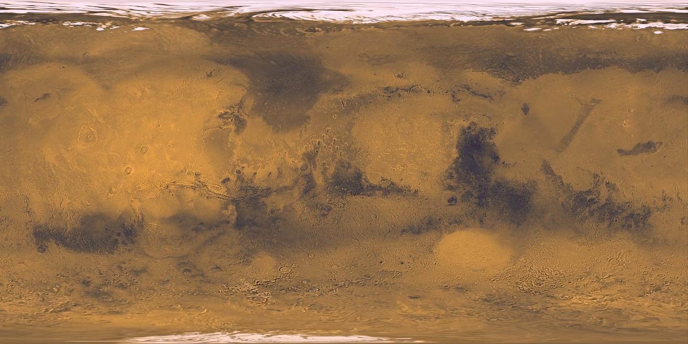

MARS · THE RED PLANET
A NEW PERSPECTIVE ON MARS
CHART THE
RED PLANET.
From orbit to the surface.
Every journey starts with a path.
One world.
Many discoveries.
Explore the Martian system: its orbiters, two moons, and the robotic missions that reveal its surface.
KNOW THE GROUND BEFORE YOU GO
A world to explore.
A place to begin.
Choose a landmark. Understand its terrain.
Find the tools available to explore it.

90°N90°SEquatorIllustrative global view. Use the surface atlas to locate the selected landmark.
Viking imagery · Caltech/JPL/USGS North up · approximate global context
From the atlas to the surface.
Jezero is the region available in MarsPath’s terrain planner.
What can I use this map for?+
Global atlas: geographic orientation and landmark context. Marker coordinates identify feature centers, not rover landing positions or route start points.
Jezero tools: published Perseverance drive history, orbital reference imagery and a regional 200 m terrain model. Other regions are reference-only in this version. Atlas imagery does not provide rover-scale obstacle clearance.
A clearer view.
A smarter path.
A new traverse.
Choose a start and destination on the Jezero map. Compare terrain-aware routes, inspect elevation changes and export your mission manifest.
Real Martian terrain. Transparent route analysis.
Launch Mission Control ↗